تعزيز الأداء, تحقيق الأثر
قيادة التحول
شركة استشارية متخصصة في بناء وتطوير القدرات القيادية والمؤسسية، وتصميم منظومات الأعمال، وتقديم حلول إدارية متكاملة تُمكّن الجهات من تحقيق التميز والاستدامة.
خدماتنا
نقدّم مسارات متكاملة في التمكين المؤسسي والقيادي لدعم المنظمات في رحلتها نحو التميز والاستدامة
التمكين المؤسسي
نطاق العمل-
تحليل الوضع الراهن المؤسسي
إجراء تشخيص شامل لمستوى نضج المنظمة عبر تقييم الهياكل والعمليات والموارد لتحديد فرص التحسين وبناء أساس للتطوير.
طلب -
تصميم الاستراتيجيات والخطط التشغيلية
بناء استراتيجيات متكاملة مرتبطة بخطط تشغيلية واضحة، تترجم التوجهات العامة إلى أهداف ومبادرات قابلة للتنفيذ والقياس.
طلب -
بناء الهياكل التنظيمية ونماذج الحوكمة
تطوير هياكل تنظيمية فعّالة ونماذج حوكمة واضحة، تضمن وضوح الأدوار، وتعزز كفاءة اتخاذ القرار والانضباط المؤسسي.
طلب -
تطوير السياسات والإجراءات التنظيمية
إعداد وتحديث السياسات والإجراءات بما يحقق التوحيد في الممارسات، ويرفع مستوى الامتثال، ويدعم كفاءة التشغيل.
طلب -
تصميم مؤشرات الأداء وإدارة الأداء المؤسسي
بناء منظومة متكاملة لقياس الأداء تربط بين الأهداف الاستراتيجية والتشغيلية، وتعزز اتخاذ القرار المبني على البيانات.
طلب -
تحسين تجربة العميل والخدمات
تحليل وتطوير رحلة العميل ورفع جودة الخدمات المقدمة، بما يعزز رضا المستفيدين ويرفع القيمة المؤسسية.
طلب -
تصميم وتطوير النموذج التشغيلي
بناء وتطوير النموذج التشغيلي بما يحقق التكامل بين الاستراتيجية والعمليات والموارد، ويرفع كفاءة التنفيذ المؤسسي.
طلب -
إعادة هندسة العمليات
تحليل وإعادة تصميم العمليات الأساسية بهدف رفع الإنتاجية، وتقليل الهدر، وتحسين جودة المخرجات.
طلب -
إدارة التغيير المؤسسي
تطبيق منهجيات إدارة التغيير لضمان جاهزية المنظمة وتبني الفرق للتحولات الجديدة واستدامتها.
طلب -
التميز التشغيلي ورفع الكفاءة
تطبيق ممارسات التميز التشغيلي لتحسين الأداء العام وتعزيز الاستدامة في النتائج التشغيلية.
طلب -
تحسين الربحية والاستدامة المالية
مواءمة التكاليف مع الأنشطة التشغيلية، وتحسين هيكل الإيرادات، ورفع كفاءة استخدام الموارد لتحقيق استدامة مالية.
طلب
التمكين القيادي
نطاق العمل-
التقييم والتشخيص القيادي
إجراء تقييم شامل للقدرات القيادية باستخدام أدوات تحليل متقدمة، لقياس الجاهزية القيادية وتحديد فجوات الأداء.
طلب -
تصميم برامج تطوير القيادات
تصميم برامج تطوير مخصصة تنطلق من احتياجات الجهة وتراعي السياق التنظيمي والتحديات الاستراتيجية.
طلب -
الإرشاد التنفيذي للقيادات العليا
تقديم جلسات إرشاد فردية وتفاعلية للقيادات التنفيذية، تركز على تطوير التفكير القيادي وجودة اتخاذ القرار.
طلب -
بناء المسارات القيادية التخصصية
تطوير مسارات قيادية واضحة بحسب المستويات الوظيفية، تضمن إعداد قيادات مستقبلية قادرة على تحمّل المسؤوليات المتقدمة.
طلب -
تطوير قدرات اتخاذ القرار
تنمية قدرات القادة على اتخاذ القرار في البيئات عالية التغيّر، من خلال تطبيقات عملية ومحاكاة واقعية للسيناريوهات القيادية.
طلب -
ربط الأداء القيادي بالأداء المؤسسي
مواءمة مخرجات التطوير القيادي مع مؤشرات الأداء المؤسسي، لضمان تحقيق أثر ملموس وقابل للقياس.
طلب
نبني القدرات القيادية
ونمكّن التميز المؤسسي
جدارة الأداء شركة استشارية متخصصة في بناء وتطوير القدرات القيادية والمؤسسية، وتصميم منظومات الأعمال، وتقديم حلول إدارية متكاملة تُمكّن الجهات من تحقيق التميز المؤسسي والاستدامة.
نعمل كشريك استراتيجي لعملائنا، نساعدهم على الانتقال من الأداء التقليدي إلى الأداء عالي الكفاءة، من خلال منهجيات عملية، وحلول قابلة للتطبيق، ومتوافقة مع أفضل الممارسات المحلية والعالمية.
رؤيتنا
أن نكون الشريك الاستشاري الأكثر موثوقية واحترافية في مجال بناء القدرات القيادية وتطوير الأداء المؤسسي.
رسالتنا
تقديم حلول أعمال واستشارات مهنية تُسهم في تطوير القيادات، وتعزيز كفاءة المنظمات، وتحقيق أثر مستدام طويل المدى.
الجودة والتميّز
الالتزام بأعلى المعايير المهنية في جميع خدماتنا ومخرجاتنا.
الإنجاز والدافعية
التركيز على تحقيق نتائج ملموسة وقابلة للقياس.
الابتكار والتجديد
تطوير حلول مرنة ومبتكرة تواكب التغيرات المتسارعة.
الرؤى الملهمة
تقديم منظور استراتيجي يساعد القيادات على اتخاذ قرارات فعّالة.
التمكين المستدام
بناء قدرات طويلة الأثر تضمن استمرارية الأداء والتطوير.
منهجيتنا
مراحل متكاملة نضمن من خلالها تحقيق نتائج ملموسة ومستدامة
التشخيص والتقييم
تحليل الفجوات التنظيمية والتشغيلية، وتقييم مواءمة الاستراتيجية مع الهيكل والعمليات والأداء.
تقييم شامل للقدرات القيادية باستخدام أدوات تحليل متقدمة، لقياس الجاهزية القيادية وتحديد فجوات الأداء.
التصميم وإعادة البناء
تصميم النماذج التنظيمية والتشغيلية المستهدفة، وبناء الأطر الداعمة للتنفيذ.
تصميم برامج تطوير ومسارات قيادية مخصصة تنطلق من احتياجات الجهة وتراعي السياق التنظيمي.
التنفيذ والتمكين
تطبيق الحلول، وتمكين القيادات والفرق، وضمان انتقال سلس نحو النموذج الجديد.
تنفيذ برامج التطوير عبر أساليب فاعلة تشمل الإرشاد التنفيذي وورش العمل التطبيقية والمحاكاة القيادية.
القياس والاستدامة
ربط الأداء بالمؤشرات الاستراتيجية، وقياس الأثر، وتعزيز التحسين المستمر.
ربط مخرجات التطوير القيادي بمؤشرات الأداء المؤسسي، وقياس الأثر، وضمان استدامة النتائج.
شركاء النجاح
نفخر في جدارة الأداء بثقة نخبة من الجهات الحكومية، وشبه الحكومية، والقطاع الخاص، والقطاع غير الربحي
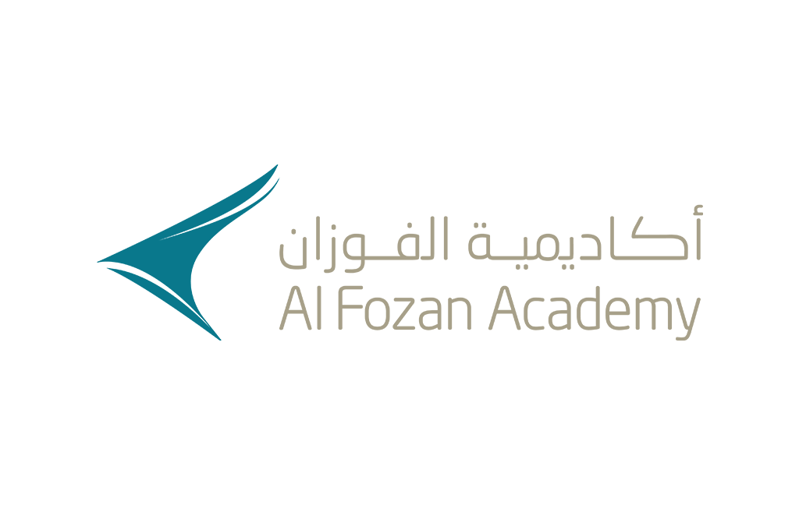
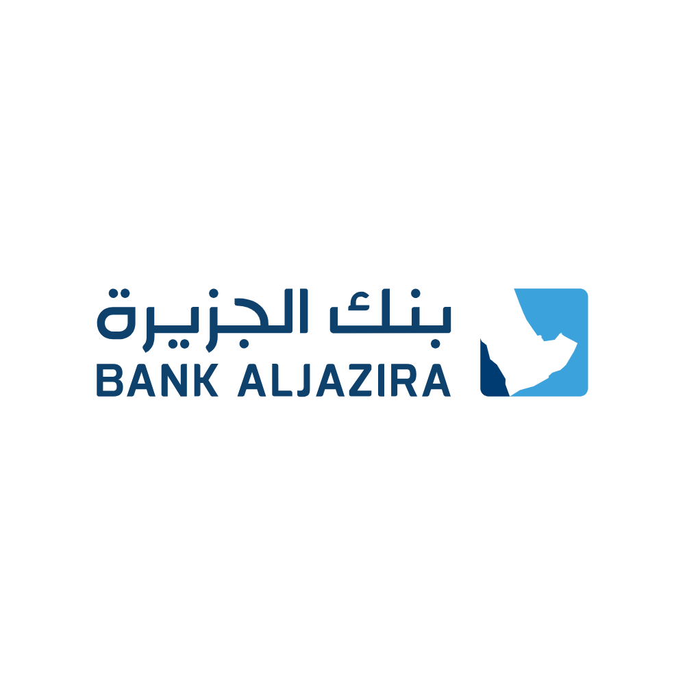
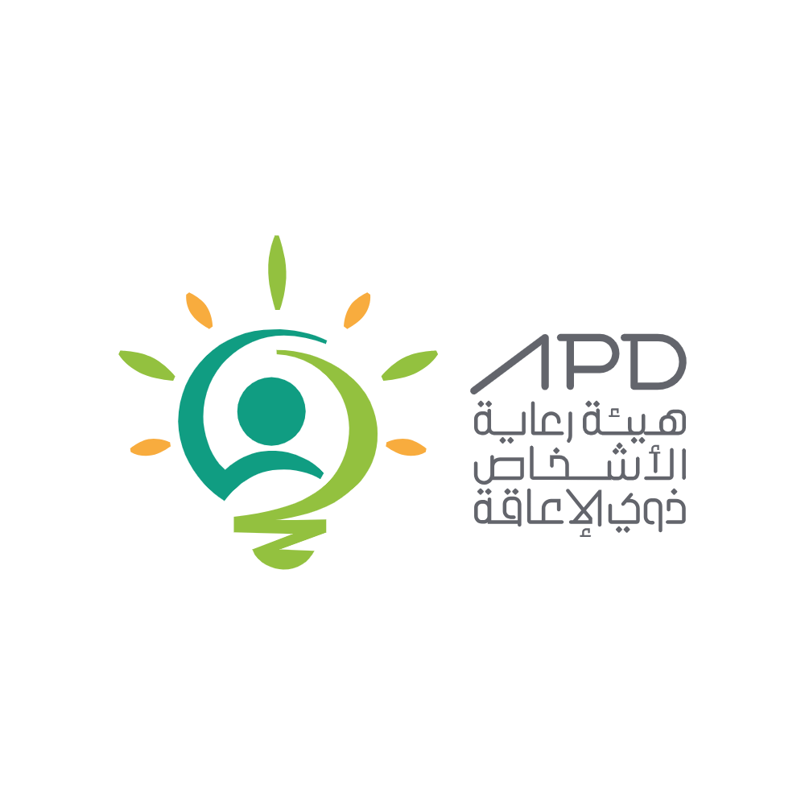
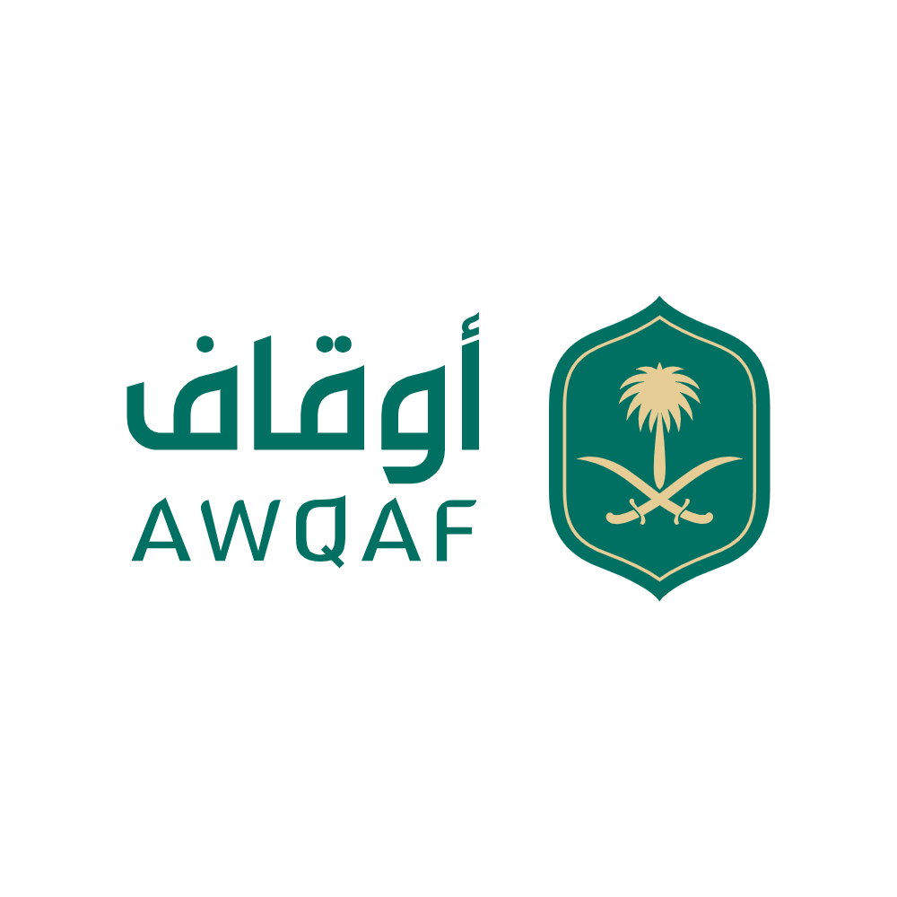
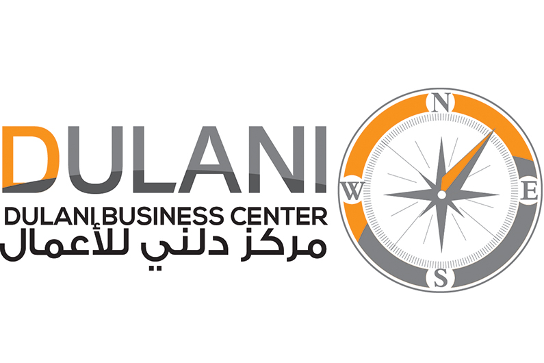
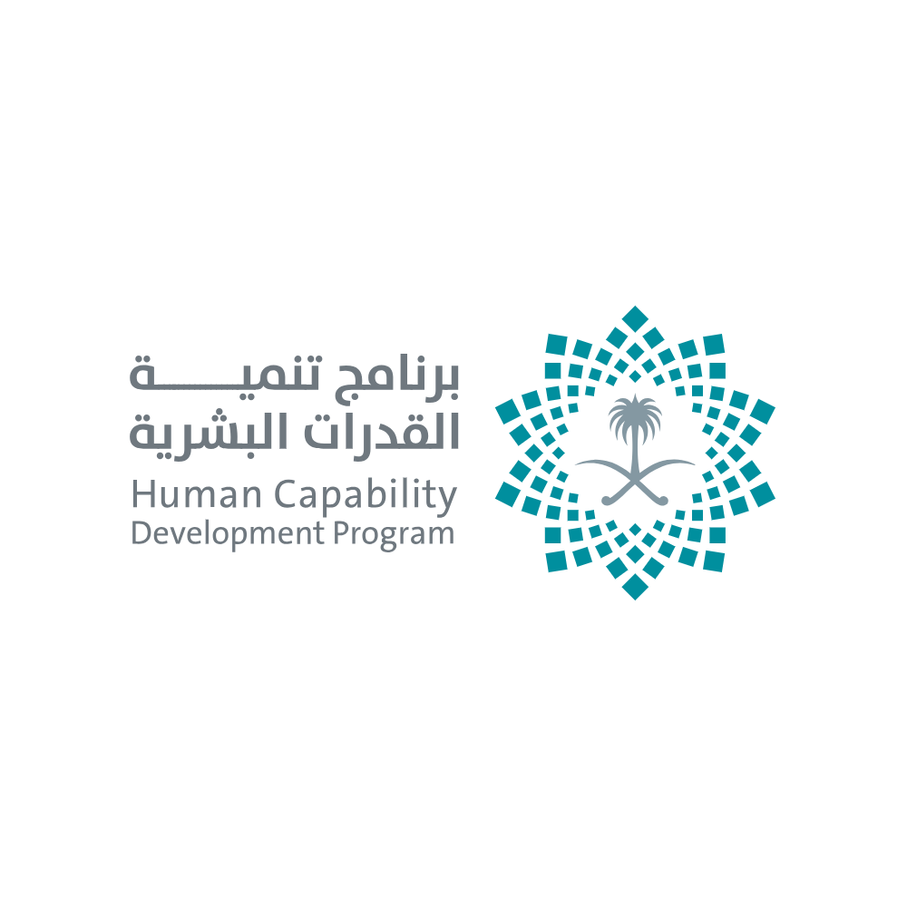

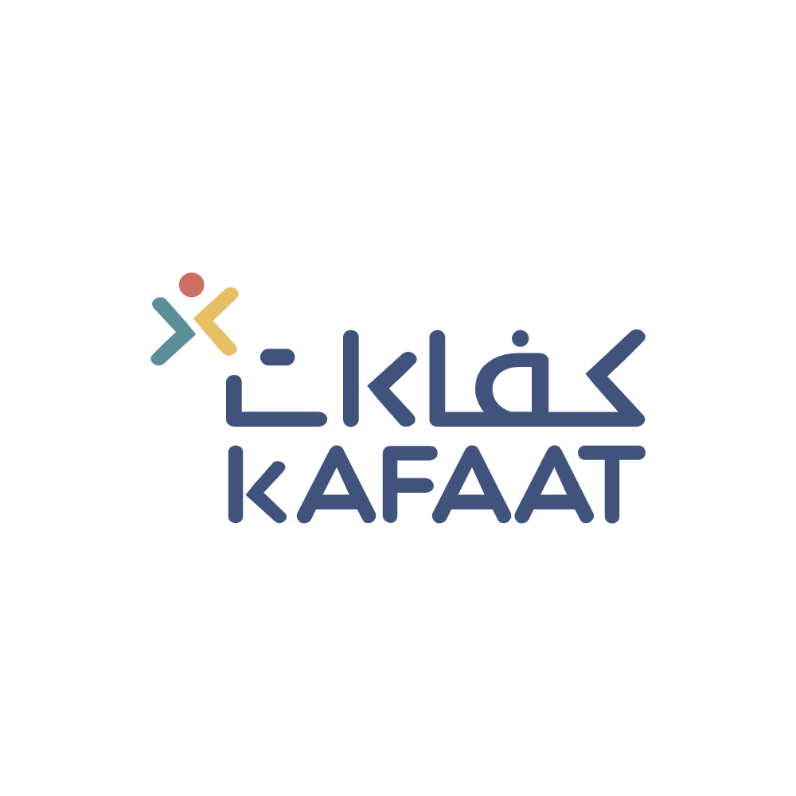

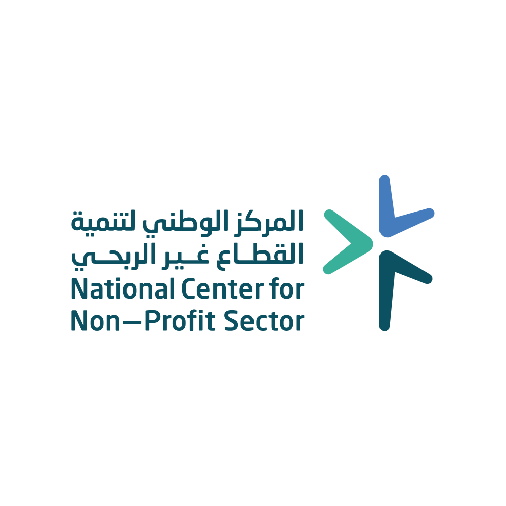
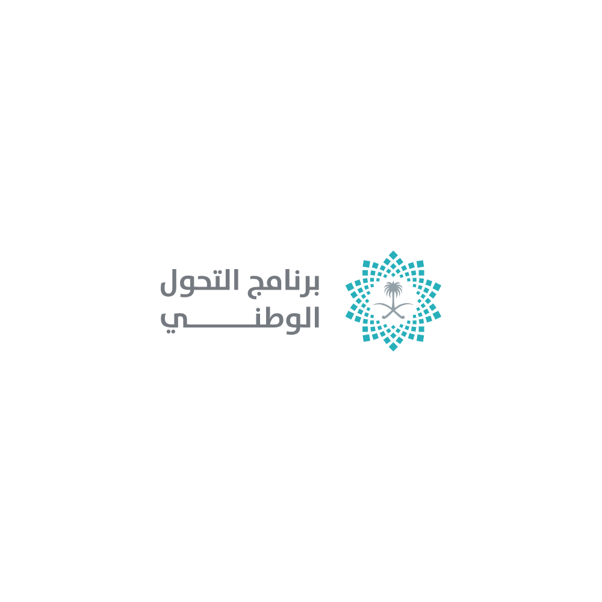
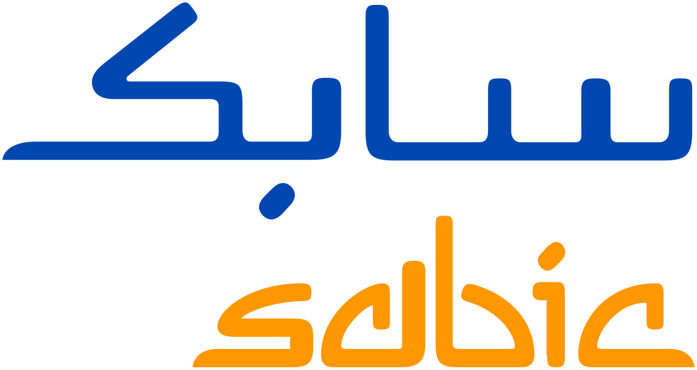
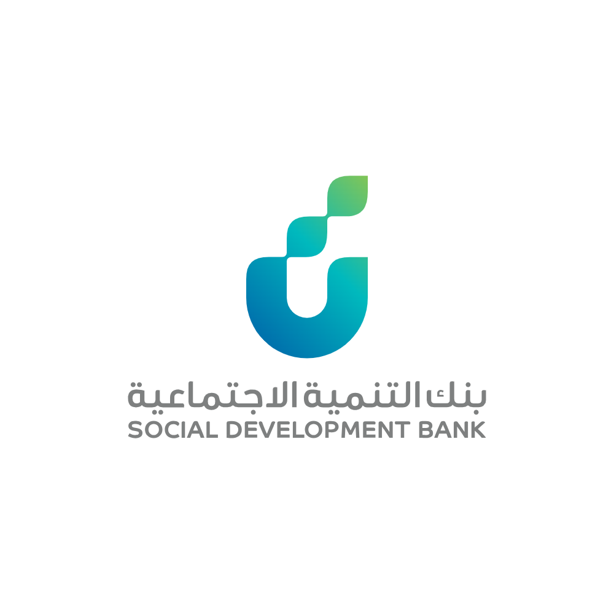
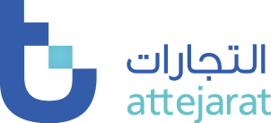
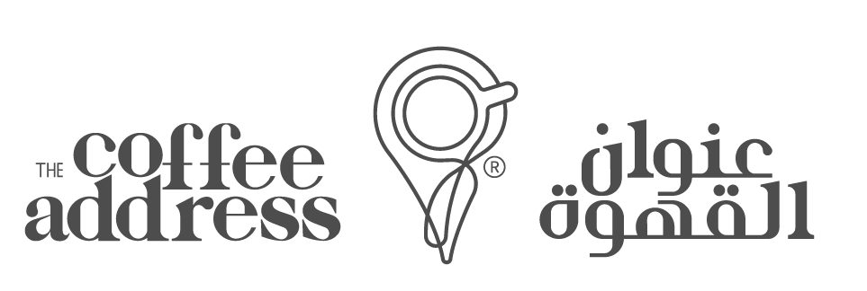
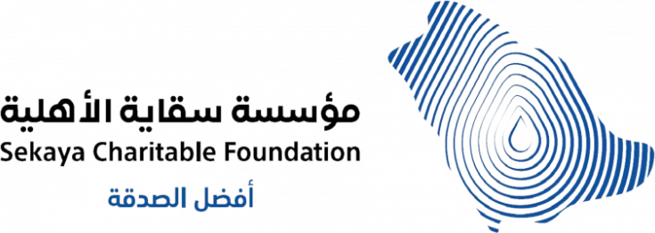
قصص نجاح
نماذج من الأثر الذي حققته جدارة الأداء مع شركائها عبر قطاعات مختلفة
لنبدأ رحلة التميز معاً
يسرّنا في جدارة الأداء التواصل معكم وبحث فرص التعاون والشراكة. أخبرنا عن مشروعك وسنتواصل معك خلال 24 ساعة.
تم إرسال طلبك بنجاح!
سنتواصل معك خلال 24 ساعة